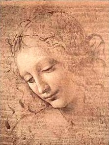

Reseña:
Leonardo da Vinci (Vinci, Toscana, 1452 - Amboise, Turena, 1519) fue un artista, pensador e investigador italiano que, por su insaciable curiosidad y su genio polifacético, representa el modelo más acabado del sabio renacentista.
Leonardo da Vinci era hijo ilegítimo de un abogado florentino, quien no le permitió conocer a su madre, una modesta campesina. Se formó como artista en Florencia, en el taller de Andrea del Verrocchio; pero gran parte de su carrera se desarrolló en otras ciudades italianas como Milán o Roma. Aunque practicó las tres artes plásticas, no se ha conservado ninguna escultura suya.
Es, por tanto, la obra pictórica de Leonardo da Vinci la que le ha hecho destacar como el gran maestro del «Cinquecento» (por encima incluso de Miguel Ángel o Rafael) y como un personaje cumbre en la historia del arte. De la veintena de cuadros suyos conservados, destacan La Anunciación, La Virgen de las Rocas, La Santa Cena, La Virgen y Santa Ana, La Adoración de los Magos y el Retrato de Ginebra Benzi. El más célebre es sin duda La Mona Lisa o La Gioconda, retrato que tuvo al parecer como modelo a Mona (abreviatura de Madonna) Lisa Gherardini, esposa de Francisco Giocondo.
Además de experimentar con diversos medios, Leonardo da Vinci también concibió formas revolucionaras de crear composiciones impactantes. De hecho, su característica composición triangular todavía se usa hoy en día y es ampliamente considerada como uno de los diseños de pintura más agradables visualmente. También fue uno de los primeros defensores del estudio de modelos anatómicos para perfeccionar su arte, algo que era ilegal en ese momento.
Mis pinturas favoritas:

La Gioconda
o
La Mona Lisa
La Ultima Cena
Cabeza
de
Muchacha
Anunciación
La Dama del Armiño